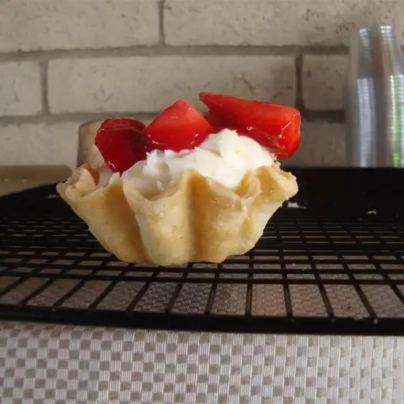

Cheese Tart

This is Cream Cheese Tart Shells
A mini tart shell recipe for any filling. Cream cheese adds a deliciously rich flavor to these tart shells.
- ½ cup butter, softened
- 3 ounces cream cheese, softened
- 1 cup all-purpose flour
- Blend butter and cream cheese. Stir in flour just until blended. Chill about 1 hour.
- Preheat the oven to 325 degrees F (165 degrees C).
- Shape dough into 24 1-inch balls and press into ungreased 1 1/2-inch muffin cups (mini-muffin size) to make a shallow shell.
- Fill with your favorite filling and bake until shells are light brown, about 20 minutes.